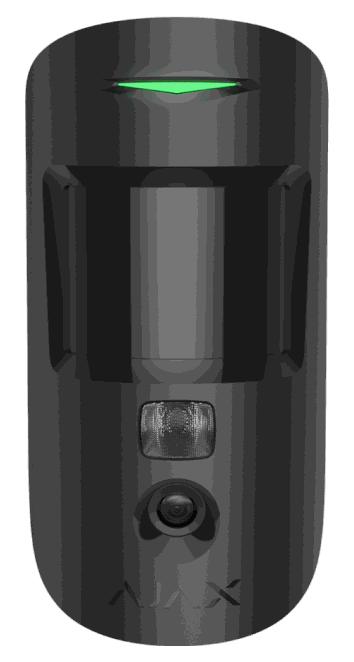
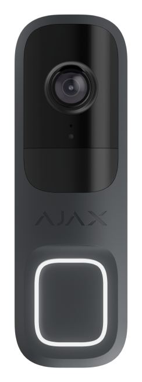
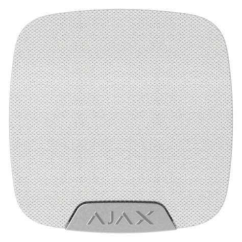

Particuliers
Sécurité pour votre maison ou appartement à La Réunion.
Solution discrète, fiable et pilotable depuis le smartphone : intrusion, alertes, vérification visuelle et scénarios du quotidien, adaptés à la vie sur l’île, y compris absences et résidences secondaires.

Besoins typiques
Ce que nous protégeons chez vous.
Maison & appartement
Ouvertures, volumes, abords. Pose soignée, esthétique discrète, formation à l’application.
Résidences secondaires
Alertes à distance, photo-vérification pour lever le doute sans vous déplacer inutilement.
Absences prolongées
Armement à distance, scénarios, suivi des événements, même depuis la métropole ou en voyage.
Animaux de compagnie
Détecteurs avec immunité animaux (selon modèles Ajax) pour limiter les fausses alertes.
Application smartphone
Armement, notifications, historique et pilotage dans l’application du fabricant.
Photo-vérification
MotionCam et équivalents : recevoir des photos en cas d’alarme pour évaluer la situation.

Photo-vérification
Une photo, pas seulement une alerte.
En cas d’alarme, recevez des images pour évaluer la situation et lever le doute, sans vous déplacer inutilement.

Au quotidien
Tout, depuis votre smartphone.
Armement, notifications, historique, vidéo et scénarios : une seule application pour toute la maison.
Approche
Baseline pour l’essentiel, Superior si besoin.
Pour la plupart des logements, la gamme Baseline (sans fil) couvre l’essentiel. Projet plus exigeant : étude Superior.
Baseline
L’essentiel, sans fil.
Large choix sans fil pour les besoins standards. Déploiement rapide, interface unique, évolutif : idéal pour démarrer et faire grandir votre système.
Voir les références BaselineSuperior
Pour les projets exigeants.
Sans fil et/ou filaire, multi-zones, sites sensibles : options avancées selon les références. Sur étude Active Sécurité 974, partenaire agréé Ajax Systems.
Voir les références SuperiorProduits phares
Matériel souvent recommandé.





Étude gratuite pour votre logement.
Intervention à domicile sur toute l’île — devis sans engagement.